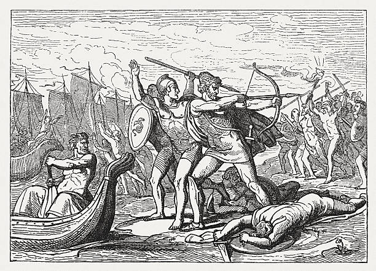

Now pleasing sleep had seal’d each mortal eye,
Stretch’d in the tents the Grecian leaders lie:
The immortals slumber’d on their thrones above;
All, but the ever-wakeful eyes of Jove.[76]
To honour Thetis’ son he bends his care,
And plunge the Greeks in all the woes of war:
Then bids an empty phantom rise to sight,
And thus commands the vision of the night.
“Fly hence, deluding Dream! and light as air,[77]
To Agamemnon’s ample tent repair.
Bid him in arms draw forth the embattled train,
Lead all his Grecians to the dusty plain.
Declare, e’en now ’tis given him to destroy
The lofty towers of wide-extended Troy.
For now no more the gods with fate contend,
At Juno’s suit the heavenly factions end.
Destruction hangs o’er yon devoted wall,
And nodding Ilion waits the impending fall.”
Swift as the word the vain illusion fled,
Descends, and hovers o’er Atrides’ head;
Clothed in the figure of the Pylian sage,
Renown’d for wisdom, and revered for age:
Around his temples spreads his golden wing,
And thus the flattering dream deceives the king.
“Canst thou, with all a monarch’s cares oppress’d,
O Atreus’ son! canst thou indulge thy rest?[78]
Ill fits a chief who mighty nations guides,
Directs in council, and in war presides,
To whom its safety a whole people owes,
To waste long nights in indolent repose.[79]
Monarch, awake! ’tis Jove’s command I bear;
Thou, and thy glory, claim his heavenly care.
In just array draw forth the embattled train,
Lead all thy Grecians to the dusty plain;
E’en now, O king! ’tis given thee to destroy
The lofty towers of wide-extended Troy.
For now no more the gods with fate contend,
At Juno’s suit the heavenly factions end.
Destruction hangs o’er yon devoted wall,
And nodding Ilion waits the impending fall.
Awake, but waking this advice approve,
And trust the vision that descends from Jove.”
The phantom said; then vanish’d from his sight,
Resolves to air, and mixes with the night.
A thousand schemes the monarch’s mind employ;
Elate in thought he sacks untaken Troy:
Vain as he was, and to the future blind,
Nor saw what Jove and secret fate design’d,
What mighty toils to either host remain,
What scenes of grief, and numbers of the slain!
Eager he rises, and in fancy hears
The voice celestial murmuring in his ears.
First on his limbs a slender vest he drew,
Around him next the regal mantle threw,
The embroider’d sandals on his feet were tied;
The starry falchion glitter’d at his side;
And last, his arm the massy sceptre loads,
Unstain’d, immortal, and the gift of gods.
Now rosy Morn ascends the court of Jove,
Lifts up her light, and opens day above.
The king despatch’d his heralds with commands
To range the camp and summon all the bands:
The gathering hosts the monarch’s word obey;
While to the fleet Atrides bends his way.
In his black ship the Pylian prince he found;
There calls a senate of the peers around:
The assembly placed, the king of men express’d
The counsels labouring in his artful breast.
“Friends and confederates! with attentive ear
Receive my words, and credit what you hear.
Late as I slumber’d in the shades of night,
A dream divine appear’d before my sight;
Whose visionary form like Nestor came,
The same in habit, and in mien the same.[80]
The heavenly phantom hover’d o’er my head,
‘And, dost thou sleep, O Atreus’ son? (he said)
Ill fits a chief who mighty nations guides,
Directs in council, and in war presides;
To whom its safety a whole people owes,
To waste long nights in indolent repose.
Monarch, awake! ’tis Jove’s command I bear,
Thou and thy glory claim his heavenly care.
In just array draw forth the embattled train,
And lead the Grecians to the dusty plain;
E’en now, O king! ’tis given thee to destroy
The lofty towers of wide-extended Troy.
For now no more the gods with fate contend,
At Juno’s suit the heavenly factions end.
Destruction hangs o’er yon devoted wall,
And nodding Ilion waits the impending fall.
This hear observant, and the gods obey!’
The vision spoke, and pass’d in air away.
Now, valiant chiefs! since heaven itself alarms,
Unite, and rouse the sons of Greece to arms.
But first, with caution, try what yet they dare,
Worn with nine years of unsuccessful war.
To move the troops to measure back the main,
Be mine; and yours the province to detain.”
He spoke, and sat: when Nestor, rising said,
(Nestor, whom Pylos’ sandy realms obey’d,)
“Princes of Greece, your faithful ears incline,
Nor doubt the vision of the powers divine;
Sent by great Jove to him who rules the host,
Forbid it, heaven! this warning should be lost!
Then let us haste, obey the god’s alarms,
And join to rouse the sons of Greece to arms.”
Thus spoke the sage: the kings without delay
Dissolve the council, and their chief obey:
The sceptred rulers lead; the following host,
Pour’d forth by thousands, darkens all the coast.
As from some rocky cleft the shepherd sees
Clustering in heaps on heaps the driving bees,
Rolling and blackening, swarms succeeding swarms,
With deeper murmurs and more hoarse alarms;
Dusky they spread, a close embodied crowd,
And o’er the vale descends the living cloud.[81]
So, from the tents and ships, a lengthen’d train
Spreads all the beach, and wide o’ershades the plain:
Along the region runs a deafening sound;
Beneath their footsteps groans the trembling ground.
Fame flies before the messenger of Jove,
And shining soars, and claps her wings above.
Nine sacred heralds now, proclaiming loud[82]
The monarch’s will, suspend the listening crowd.
Soon as the throngs in order ranged appear,
And fainter murmurs died upon the ear,
The king of kings his awful figure raised:
High in his hand the golden sceptre blazed;
The golden sceptre, of celestial flame,
By Vulcan form’d, from Jove to Hermes came.
To Pelops he the immortal gift resign’d;
The immortal gift great Pelops left behind,
In Atreus’ hand, which not with Atreus ends,
To rich Thyestes next the prize descends;
And now the mark of Agamemnon’s reign,
Subjects all Argos, and controls the main.[83]
On this bright sceptre now the king reclined,
And artful thus pronounced the speech design’d:
“Ye sons of Mars, partake your leader’s care,
Heroes of Greece, and brothers of the war!
Of partial Jove with justice I complain,
And heavenly oracles believed in vain
A safe return was promised to our toils,
Renown’d, triumphant, and enrich’d with spoils.
Now shameful flight alone can save the host,
Our blood, our treasure, and our glory lost.
So Jove decrees, resistless lord of all!
At whose command whole empires rise or fall:
He shakes the feeble props of human trust,
And towns and armies humbles to the dust.
What shame to Greece a fruitful war to wage,
Oh, lasting shame in every future age!
Once great in arms, the common scorn we grow,
Repulsed and baffled by a feeble foe.
So small their number, that if wars were ceased,
And Greece triumphant held a general feast,
All rank’d by tens, whole decades when they dine
Must want a Trojan slave to pour the wine.[84]
But other forces have our hopes o’erthrown,
And Troy prevails by armies not her own.
Now nine long years of mighty Jove are run,
Since first the labours of this war begun:
Our cordage torn, decay’d our vessels lie,
And scarce insure the wretched power to fly.
Haste, then, for ever leave the Trojan wall!
Our weeping wives, our tender children call:
Love, duty, safety, summon us away,
’Tis nature’s voice, and nature we obey.
Our shatter’d barks may yet transport us o’er,
Safe and inglorious, to our native shore.
Fly, Grecians, fly, your sails and oars employ,
And dream no more of heaven-defended Troy.”
His deep design unknown, the hosts approve
Atrides’ speech. The mighty numbers move.
So roll the billows to the Icarian shore,
From east and south when winds begin to roar,
Burst their dark mansions in the clouds, and sweep
The whitening surface of the ruffled deep.
And as on corn when western gusts descend,[85]
Before the blast the lofty harvests bend:
Thus o’er the field the moving host appears,
With nodding plumes and groves of waving spears.
The gathering murmur spreads, their trampling feet
Beat the loose sands, and thicken to the fleet;
With long-resounding cries they urge the train
To fit the ships, and launch into the main.
They toil, they sweat, thick clouds of dust arise,
The doubling clamours echo to the skies.
E’en then the Greeks had left the hostile plain,
And fate decreed the fall of Troy in vain;
But Jove’s imperial queen their flight survey’d,
And sighing thus bespoke the blue-eyed maid:
“Shall then the Grecians fly! O dire disgrace!
And leave unpunish’d this perfidious race?
Shall Troy, shall Priam, and the adulterous spouse,
In peace enjoy the fruits of broken vows?
And bravest chiefs, in Helen’s quarrel slain,
Lie unrevenged on yon detested plain?
No: let my Greeks, unmoved by vain alarms,
Once more refulgent shine in brazen arms.
Haste, goddess, haste! the flying host detain,
Nor let one sail be hoisted on the main.”
Pallas obeys, and from Olympus’ height
Swift to the ships precipitates her flight.
Ulysses, first in public cares, she found,
For prudent counsel like the gods renown’d:
Oppress’d with generous grief the hero stood,
Nor drew his sable vessels to the flood.
“And is it thus, divine Laertes’ son,
Thus fly the Greeks (the martial maid begun),
Thus to their country bear their own disgrace,
And fame eternal leave to Priam’s race?
Shall beauteous Helen still remain unfreed,
Still unrevenged, a thousand heroes bleed!
Haste, generous Ithacus! prevent the shame,
Recall your armies, and your chiefs reclaim.
Your own resistless eloquence employ,
And to the immortals trust the fall of Troy.”
The voice divine confess’d the warlike maid,
Ulysses heard, nor uninspired obey’d:
Then meeting first Atrides, from his hand
Received the imperial sceptre of command.
Thus graced, attention and respect to gain,
He runs, he flies through all the Grecian train;
Each prince of name, or chief in arms approved,
He fired with praise, or with persuasion moved.
“Warriors like you, with strength and wisdom bless’d,
By brave examples should confirm the rest.
The monarch’s will not yet reveal’d appears;
He tries our courage, but resents our fears.
The unwary Greeks his fury may provoke;
Not thus the king in secret council spoke.
Jove loves our chief, from Jove his honour springs,
Beware! for dreadful is the wrath of kings.”